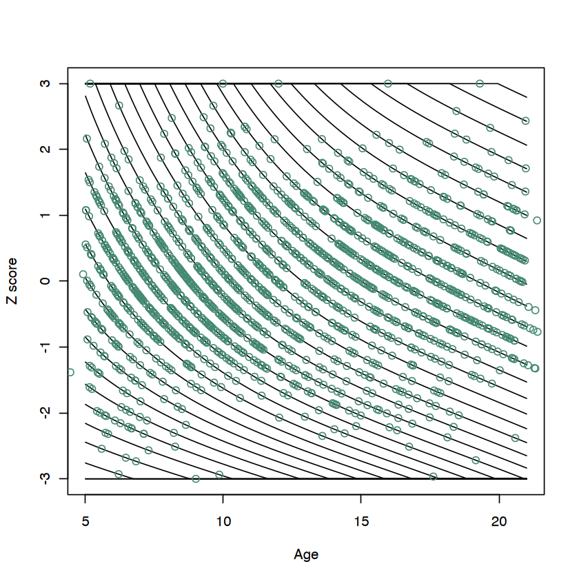
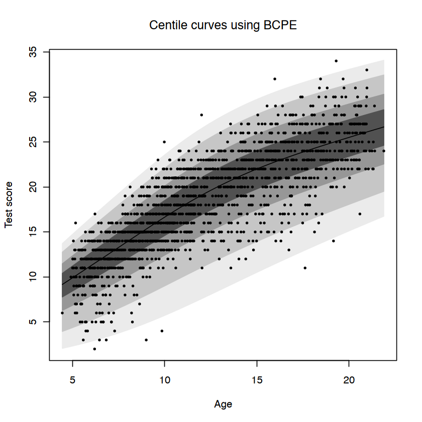

La normazione basata sulla regressione è una tecnica che consente di trasformare i punteggi grezzi di un test in punteggi normati, confrontando la performance di un individuo rispetto a una popolazione di riferimento. Questo metodo utilizza modelli statistici per stimare una relazione continua tra i punteggi del test e una variabile predittiva, come l’età.
Immaginiamo di avere un test che misura una capacità cognitiva, ad esempio il ragionamento verbale. I punteggi grezzi (quanti item un partecipante risponde correttamente) variano con l’età. Un bambino di 7 anni potrebbe ottenere un punteggio più basso rispetto a un quindicenne, ma ciò non significa necessariamente che il bambino abbia una performance peggiore: semplicemente, le abilità cognitive cambiano con l’età.
La normazione basata sulla regressione ci aiuta a interpretare i punteggi in modo equo, tenendo conto di queste differenze legate all’età.
8.2 Tutorial
Il codice presentato in questo tutorial è una versione semplificata e adattata dell’implementazione originale proposta da Timmerman et al. (2021). I dati utilizzati sono messi a disposizione dagli autori dello studio.
Il test IDS-2 (Intelligence and Development Scales, Second Edition) è uno strumento psicometrico progettato per misurare l’intelligenza e le abilità di sviluppo in bambini e adolescenti. Il test valuta un’ampia gamma di competenze cognitive, scolastiche e di sviluppo, offrendo un profilo dettagliato delle capacità del soggetto. Tra i suoi obiettivi principali vi sono la diagnosi educativa, la pianificazione di interventi e l’identificazione dei punti di forza e delle aree di miglioramento individuali.
In questo tutorial ci concentreremo sul Sottotest 14 dell’IDS-2, denominato Naming Antonyms (Denominare Contrari), per illustrare il processo di normazione basata sulla regressione.
Il sottotest Naming Antonyms è parte della scala Verbal Reasoning (Ragionamento Verbale), una componente chiave dell’intelligenza fluida e cristallizzata misurata dall’IDS-2. Questo sottotest valuta la capacità di generare il contrario di una parola, misurando il vocabolario, il ragionamento linguistico e la flessibilità cognitiva.
Questo specifico sottotest è particolarmente indicato per dimostrare la normazione basata sulla regressione perché i punteggi grezzi mostrano una variazione prevedibile con l’età. Tale caratteristica rende evidente l’importanza di utilizzare un modello che tenga conto delle variazioni graduali nei dati per una stima più accurata e rappresentativa.
Carichiamo il dataset di riferimento (IDS2_sample) che contiene:
L’età dei partecipanti.
I punteggi grezzi di un sottotest del ragionamento verbale (y14).
Alcuni modelli statistici non possono gestire punteggi pari a zero. Per evitare problemi, aggiungiamo un piccolo valore (es. 0.0001) a tutti i punteggi grezzi:
IDS2_sample$y14_a <- IDS2_sample$y14 +0.0001
Questo non altera i risultati ma rende i calcoli più robusti.
8.2.2 Costruzione del Modello
Utilizziamo un modello statistico avanzato, chiamato BCPE (Box-Cox Power Exponential), che può catturare variazioni complesse nei dati. Questo modello stima come i punteggi grezzi cambiano con l’età.
Per farlo, usiamo P-splines, una tecnica che crea curve fluide senza imporre rigide relazioni lineari. Il modello tiene conto di: - Mu (μ): La media dei punteggi. - Sigma (σ): La variabilità (quanto i punteggi si disperdono). - Nu (ν): La simmetria della distribuzione. - Tau (τ): La “coda” della distribuzione (quanto è estesa).
BCPE_mod_sp <-gamlss( y14_a ~pbm(age, method ="GAIC", k =log(nrow(IDS2_sample)), inter =5, mono ="up"),sigma.formula =~pb(age, method ="GAIC", k =log(nrow(IDS2_sample)), inter =5),nu.formula =~1,tau.formula =~1,family = BCPE,data = IDS2_sample,method =RS(1000))
GAMLSS-RS iteration 1: Global Deviance = 8348.078
GAMLSS-RS iteration 2: Global Deviance = 8346.432
GAMLSS-RS iteration 3: Global Deviance = 8346.026
GAMLSS-RS iteration 4: Global Deviance = 8345.86
GAMLSS-RS iteration 5: Global Deviance = 8345.847
GAMLSS-RS iteration 6: Global Deviance = 8345.848
8.2.2.1 Differenze tra il Modello BCPE e un Modello di Regressione Standard
Un modello di regressione standard (ad esempio, una regressione lineare semplice o multipla) si concentra principalmente su come la media di una variabile dipendente (ad esempio, i punteggi grezzi di un test) cambia in relazione a una o più variabili predittive (ad esempio, l’età). Il modello Box-Cox Power Exponential (BCPE) è molto più flessibile e sofisticato, perché descrive non solo la media, ma anche altre caratteristiche della distribuzione dei punteggi grezzi.
Vediamo nel dettaglio come il modello BCPE si differenzia da un modello di regressione standard.
8.2.2.2 Obiettivo del Modello
Regressione Standard: Stima una relazione tra una variabile dipendente e una o più variabili predittive. L’obiettivo principale è prevedere la media condizionale della variabile dipendente per ogni valore delle predittive.
Ad esempio: “Come cambia il punteggio medio del test con l’aumentare dell’età?”
Modello BCPE: Non si limita a stimare la media, ma descrive l’intera distribuzione dei punteggi grezzi in funzione dell’età. Stima quattro parametri:
Mu (μ): La media dei punteggi grezzi (equivalente all’obiettivo della regressione standard).
Sigma (σ): La variabilità dei punteggi (dispersione).
Nu (ν): La simmetria della distribuzione (se la distribuzione è simmetrica o asimmetrica).
Tau (τ): L’estensione delle code della distribuzione (quanto sono probabili valori estremi).
8.2.2.3 Caratteristiche della Distribuzione
Regressione Standard: Presuppone che i dati seguano una distribuzione normale con:
Una varianza costante (omoschedasticità).
Una distribuzione simmetrica.
Code “standard” (come nella distribuzione normale).
Modello BCPE: Permette alla distribuzione di:
Avere una varianza che cambia con l’età (eteroschedasticità).
Essere asimmetrica (ad esempio, con più punteggi bassi che alti o viceversa).
Avere code più estese o più strette rispetto a quelle di una normale.
Questo è particolarmente utile nei test psicologici, dove la varianza, la simmetria e le code possono cambiare in modo complesso con l’età o altre variabili.
8.2.2.4 Relazione Tra Punteggi e Predittori
Regressione Standard: La relazione tra la variabile dipendente e le predittive è solitamente definita da una funzione lineare o polinomiale, che è rigida e può non adattarsi bene a dati complessi.
Modello BCPE con P-Splines: Utilizza le P-splines, una tecnica che consente di creare curve fluide senza imporre una forma rigida alla relazione. Le P-splines dividono la variabile predittiva (ad esempio, l’età) in intervalli e stimano una curva continua che si adatta ai dati, permettendo cambiamenti graduali e non lineari.
8.2.2.5 Uso di Più Parametri
Regressione Standard: Stima solo i parametri per il modello della media (es. i coefficienti di regressione).
BCPE: Stima parametri separati per la media (μ), la dispersione (σ), la simmetria (ν) e le code (τ), permettendo di descrivere l’intera distribuzione dei punteggi.
8.2.2.6 Applicazioni Pratiche
Regressione Standard: Adatta per dati semplici dove interessa principalmente come cambia la media rispetto a una predittiva.
Modello BCPE: Ideale per dati complessi, come punteggi psicometrici, dove:
I valori estremi (code) sono importanti.
La variabilità cambia con la predittiva (ad esempio, i punteggi diventano più vari con l’aumentare dell’età).
La distribuzione non è simmetrica.
Nel modello BCPE specificato:
Media (μ): Relazione stimata con P-splines (non lineare):
y14_a ~pbm(age, method ="GAIC", k =log(nrow(IDS2_sample)), inter =5, mono ="up")
Variabilità (σ): Anche questa varia con l’età, stimata con P-splines:
sigma.formula =~pb(age, method ="GAIC", k =log(nrow(IDS2_sample)), inter =5)
Simmetria (ν) e Coda (τ): In questo esempio, sono assunti costanti per semplicità:
nu.formula =~1,tau.formula =~1
Famiglia BCPE: Specifica che i dati seguono la distribuzione Box-Cox Power Exponential, flessibile per adattarsi ai dati osservati:
family = BCPE
In conclusione, il modello BCPE è più complesso di una regressione standard, ma è anche molto più potente. Permette di:
Descrivere come i punteggi cambiano non solo in media, ma anche nella variabilità, simmetria e code.
Adattarsi a dati complessi grazie alla flessibilità delle P-splines.
Questo lo rende uno strumento ideale per la normazione basata sulla regressione in contesti psicologici.
8.2.3 Predizione per Ogni Età
Per comprendere come i punteggi del test variano con l’età, stimiamo i parametri del modello (μ, σ, ν, τ) per una gamma continua di età (ad esempio, dai 5 ai 21 anni). Questi parametri descrivono l’intera distribuzione dei punteggi grezzi per ogni età, permettendoci di costruire curve continue.
# Creazione di una gamma di età da 5 a 21 annipop_age <-data.frame(age =seq(5, 21, length.out =1000))# Predizione dei parametri distribuzionali per ogni etàpred_distr <-predictAll(BCPE_mod_sp, newdata = pop_age, type ="response")
Con questa predizione, otteniamo per ciascuna età i seguenti parametri:
μ (media): Il punteggio medio previsto.
σ (deviazione standard): La variabilità dei punteggi.
ν (asimmetria): Indica se la distribuzione è sbilanciata verso destra o sinistra.
τ (code): Indica quanto i punteggi estremi sono frequenti.
8.2.4 Calcolo dei Percentili
Una volta stimati i parametri per ogni età, possiamo calcolare i percentili per una gamma di punteggi grezzi (ad esempio, da 0 a 34). I percentili ci dicono come un punteggio si posiziona rispetto alla popolazione.
# Definizione dell'intervallo di punteggi grezziMin_score <-0.0001Max_score <-34.0001step_size <-1# Matrice per i percentili (righe = età, colonne = punteggi grezzi)CDF_matrix <-matrix(NA, nrow =nrow(pop_age), ncol =35) # 35 punteggi grezzi possibili# Calcolo della distribuzione cumulativa per ogni etàfor (i in1:nrow(pop_age)) { CDF_matrix[i, ] <-pBCPE(seq(from =0.0001, to =34.0001, by =1),mu = pred_distr$mu[i],sigma = pred_distr$sigma[i],nu = pred_distr$nu[i],tau = pred_distr$tau[i],lower.tail =TRUE )}
Questa matrice contiene i percentili per ogni combinazione di età e punteggio grezzo.
8.2.5 Trasformazione in Punteggi Z
I percentili vengono poi trasformati in punteggi Z, che indicano quanto un punteggio si discosta dalla media della popolazione (in unità di deviazione standard). Ad esempio:
uno Z = 0 rappresenta la media;
uno Z = 1.5 significa che il punteggio è 1.5 deviazioni standard sopra la media.
# Trasformazione dei percentili in punteggi Zz_matrix14 <-qnorm(CDF_matrix)# Limitazione dei valori Z al range [-3, +3]z_matrix14 <-apply(z_matrix14, 1, function(x) ifelse(x >3, 3, ifelse(x <-3, -3, x)))# Trasposizione della matrice per allineare righe (età) e colonne (punteggi grezzi)z_matrix14 <-t(z_matrix14) # Ora z_matrix14 avrà dimensioni [1000, 35]
8.2.6 Visualizzazione dei Punteggi Z
Plottiamo i punteggi Z rispetto all’età. Ogni linea rappresenta un punteggio grezzo specifico e mostra come il relativo Z-score varia con l’età.
# Grafico delle curve Z rispetto all'etàplot(z_matrix14[, 1], x = pop_age[, "age"], ylim =c(-3, 3), ylab ="Z score", xlab ="Age", type ="l")for (i in2:ncol(z_matrix14)) {lines(z_matrix14[, i], x = pop_age[, "age"])}# Per confrontare i risultati del modello con i dati reali, calcoliamo i punteggi Z per ogni # partecipante del campione normativo.CDF_sample <-rep(NA, times =nrow(IDS2_sample))for (i in1:nrow(IDS2_sample)) { CDF_sample[i] <-pBCPE( IDS2_sample$y14_a[i],mu = BCPE_mod_sp$mu.fv[i],sigma = BCPE_mod_sp$sigma.fv[i],nu = BCPE_mod_sp$nu.fv[i],tau = BCPE_mod_sp$tau.fv[i],lower.tail =TRUE )}# Trasformazione in punteggi Zz_sample14 <-ifelse(qnorm(CDF_sample) >3, 3, ifelse(qnorm(CDF_sample) <-3, -3, qnorm(CDF_sample)))# Aggiunta dei dati osservati al graficopoints(z_sample14, x = IDS2_sample$age, col ="aquamarine4", pch =1)

8.2.7 Interpretazione
Punteggio Z = 1.5: Il partecipante si trova circa all’85° percentile, ovvero ha una performance migliore rispetto all’85% della popolazione.
Punteggio Z = -2: Il partecipante si colloca al 2° percentile, indicando una performance significativamente inferiore alla media.
8.2.8 Vantaggi della Normazione Basata sulla Regressione
Continuità: Ogni età ha un valore stimato unico, senza salti artificiali tra fasce di età.
Precisione: Le curve catturano le variazioni graduali nella popolazione.
Adattabilità: Si adatta a distribuzioni complesse (non lineari, asimmetriche, con code estese).
Questa metodologia consente agli psicologi di interpretare i punteggi del test in modo equo e accurato, tenendo conto delle differenze nella popolazione di riferimento.
8.2.9 Grafico delle Curve Centili
La funzione centiles.fan del pacchetto gamlss calcola automaticamente le curve centili utilizzando i parametri stimati dal modello, rendendo facile visualizzare le relazioni tra punteggi grezzi, età e percentili.
# Aggiunta di curve centili al plotcentiles.fan( BCPE_mod_sp,xvar = IDS2_sample$age,points =TRUE,colors ="gray",col ="black",pch =16,ylab ="Test score",xlab ="Age")

Le curve centili mostrano le soglie per diversi percentili in base ai dati normativi. Ogni curva indica il valore del punteggio grezzo che corrisponde a un determinato percentile per una data età.
Nel grafico delle curve centili, le quattro regioni attorno alla mediana (il 50° percentile) rappresentano intervalli percentili specifici. Le intensità di grigio diverse riflettono il grado di normalità o tipicità del punteggio rispetto alla popolazione di riferimento. Più una regione è vicina alla mediana, più i punteggi in quella fascia sono considerati “tipici”. Ecco come si interpretano le regioni:
8.2.9.1 Regione più scura (vicina alla mediana): 25° - 75° percentile
Questa regione rappresenta i punteggi tipici della popolazione.
Circa il 50% dei partecipanti si trova in questa fascia (dal 25% al 75% della distribuzione).
Interpretazione pratica:
Un punteggio all’interno di questa regione indica una performance normale per quell’età. Ad esempio:
Un punteggio nel 50° percentile (linea centrale della regione) è esattamente nella media.
Punteggi vicini al 25° o al 75° percentile sono ancora normali, ma più vicini ai limiti della variabilità tipica.
8.2.9.2 Seconda regione (più chiara): 10° - 90° percentile
Questa regione include punteggi ampiamente tipici, coprendo circa l’80% della popolazione.
I punteggi qui sono meno comuni rispetto alla fascia 25°-75°, ma rientrano comunque in un range “non estremo”.
Interpretazione pratica:
Un punteggio in questa regione può indicare una leggera deviazione dalla norma, ma non è considerato problematico.
Ad esempio, un punteggio nel 10° percentile è basso rispetto alla maggior parte della popolazione, ma non è raro.
8.2.9.3 Terza regione (ancora più chiara): 2° - 98° percentile
Questa regione copre i valori estremi non eccezionali, includendo circa il 96% della popolazione.
I punteggi qui sono considerati insoliti, ma non necessariamente indicativi di un’anomalia significativa.
8.2.9.4 Regione più chiara (esterna): 0.4° - 99.6° percentile
Questa regione rappresenta i valori estremi della distribuzione, includendo circa il 99.2% della popolazione.
I punteggi in questa fascia sono molto rari e spesso considerati anomali.
Interpretazione pratica:
Un punteggio al di sotto del 0.4° percentile o al di sopra del 99.6° percentile è eccezionalmente basso o alto e potrebbe indicare una condizione atipica, sia in senso negativo che positivo.
Regione
Intervallo Percentile
Popolazione Inclusa
Interpretazione
Più scura
25° - 75°
50%
Performance tipica
Seconda
10° - 90°
80%
Ampiamente tipica
Terza
2° - 98°
96%
Insolita ma non estrema
Più chiara
0.4° - 99.6°
99.2%
Valori estremi
I punteggi vicini alla mediana o all’interno del 25°-75° percentile sono i più comuni e indicano normalità.
I punteggi che cadono nelle regioni più chiare potrebbero richiedere ulteriori indagini, soprattutto se sono nella fascia 0.4°-2° percentile (valori estremamente bassi) o 98°-99.6° percentile (valori estremamente alti).
Questo tipo di visualizzazione aiuta a collocare rapidamente un punteggio individuale rispetto alla distribuzione della popolazione e a identificare possibili deviazioni significative.
8.2.9.5 La Funzione centiles.fan
La funzione centiles.fan è un’utility di gamlss che calcola e plotta automaticamente queste curve centili in base a un modello stimato.
BCPE_mod_sp: Questo è il modello stimato, che definisce come i punteggi del test sono distribuiti in funzione dell’età. La funzione usa i parametri del modello (μ, σ, ν, τ) per calcolare le curve centili.
xvar = IDS2_sample$age: Specifica che l’età è la variabile sull’asse X. Questo consente di tracciare le curve centili rispetto all’età.
Timmerman, M. E., Voncken, L., & Albers, C. J. (2021). A tutorial on regression-based norming of psychological tests with GAMLSS. Psychological Methods, 26(3), 357–373.